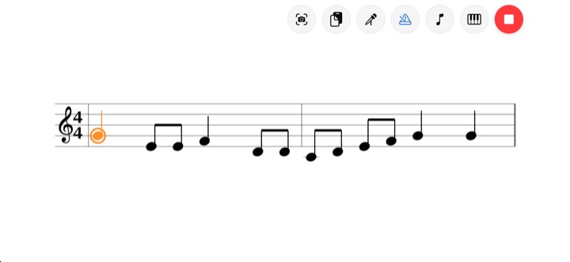
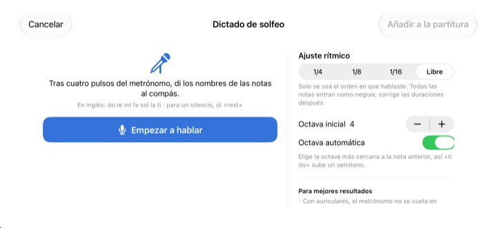
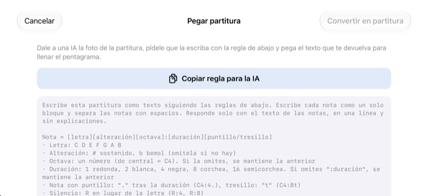

Deja de contar en la cabeza.
Escúchalo.
Copia en el pentagrama los dos compases que se te atoran y dale a reproducir. Tras un compás de cuenta previa, StaffSinger los toca al clic del metrónomo, con el ritmo y la altura exactos.
Todas las funciones son gratis. Para iPhone y iPad.

Escribe unas notas y escúchalas
Mantén presionado el pentagrama, desliza hacia arriba o hacia abajo para cambiar la altura y suelta para colocar la nota. Dale a reproducir para oír un compás de cuenta previa y luego tus notas. Sube el volumen: la página suena.
¿Otra vez perdiste la cuenta a mitad del compás?
Una corchea con puntillo, luego una semicorchea y justo después un tresillo, y marcarlo con la mano en la rodilla ya no funciona. Muchas veces tampoco hay un piano cerca, como la noche antes del ensayo. Copia esos dos compases en StaffSinger y los toca tal como están escritos.
El ritmo y la altura exactos
Tras un compás de cuenta previa, la música suena al clic del metrónomo y la nota que está sonando se ilumina en naranja. Ajusta el tempo entre 40 y 200 BPM y elige 4/4, 3/4, 2/4, 6/8, 2/2 o 3/8.
Apila notas en el mismo pulso y suenan juntas como acorde; además puedes escribir hasta tres voces. Tiene clave de sol, de do y de fa, y armaduras.

Canta los nombres, aparecen las notas
Tras cuatro clics del metrónomo, di do re mi en voz alta y a tiempo, y aparecen en el pentagrama. Si hablas justo en el pulso, también se registra el ritmo, en negras, corcheas o semicorcheas. Di rest para un silencio.
Los nombres se dicen en inglés: do re mi fa sol la ti, con ti en lugar de si. El reconocimiento de voz se hace en tu dispositivo y no se guarda nada.

Pásale la foto a una IA y pega el resultado
Toca Copiar regla para la IA, dásela a una IA junto con una foto de tu partitura y pega lo que te responda. El pentagrama se llena solo. El formato está en la tabla de abajo.
También puedes tomarle una foto a la hoja impresa y dejarla en pantalla mientras la copias a mano.

Empieza en tres pasos
- 1
Elige los compases difíciles
La app abre con un pentagrama vacío de dos compases.
- 2
Escribe las notas
Presiona el pentagrama o toca las teclas del piano.
- 3
Dale a reproducir
Una cuenta previa y luego la reproducción con metrónomo.
Formato de texto para pegar
- C4:4
- do en la octava 4, negra (el do central es C4)
- D:8
- Si omites la octava, se mantiene la anterior
- F#4:8 · Bb4:4
- # para sostenido, b para bemol
- E4
- Si omites :duración, se mantiene la anterior
- :1 · :2 · :4 · :8 · :16
- redonda, blanca, negra, corchea, semicorchea
- C4:4.
- nota con puntillo
- C4:8t
- tresillo
- R:4 · R:8
- silencios
El botón Copiar regla para la IA copia exactamente estas instrucciones. Las letras C D E F G A B equivalen a do re mi fa sol la si. Separa las notas con espacios.
Todo es gratis
Gratis
- Escritura en el pentagrama y teclado de piano de dos octavas
- Reproducción con cuenta previa y metrónomo
- Acordes y tres voces
- Armaduras y tres claves
- Dictado de solfeo
- Pegar como texto y fotos de referencia
Apoya al desarrollador
- Deja una pequeña propina desde Ajustes
- Las propinas no desbloquean nada extra
No es una suscripción. Cada propina es un pago único.
Sin anuncios y sin necesidad de cuenta.
Preguntas
¿Cómo agrego notas?
Primero elige una duración en la barra de herramientas y luego presiona el pentagrama a la altura que quieras. Mientras mantienes presionado oyes la nota, y se agrega al soltar. Toca el botón del teclado para escribir notas en un piano de dos octavas.
¿Cómo hago un acorde?
Activa el botón Acorde en la barra de herramientas y agrega notas. Se apilan sobre la nota seleccionada y suenan juntas.
¿Cómo corrijo una nota?
Arrastra la nota hacia arriba o hacia abajo para cambiar su altura, o hacia un lado para moverla a otro pulso. Con una nota seleccionada, los botones ♯ y ♭ la mueven medio tono y los botones 8va, una octava.
¿Dónde cambio el tempo o el compás?
En Ajustes, junto con la clave y la armadura. Ahí también puedes activar o desactivar el metrónomo y la cuenta previa.
No se oye nada.
Revisa el modo silencio y el volumen multimedia. Si solo falta el metrónomo, confirma en Ajustes, dentro de Ayuda de reproducción, que el metrónomo esté activado.
El dictado se equivoca de nota.
Usa audífonos para que el metrónomo no se cuele en el micrófono y di un nombre de nota claro por pulso. Si alguna nota sale mal, arrástrala para corregirla.
¿Para qué necesita la cámara?
Solo para tomar una foto de referencia de tu partitura y mostrarla en pantalla. Las fotos nunca salen de tu dispositivo, y puedes elegir una de tu fototeca sin dar acceso a la cámara.
¿En qué dispositivos funciona?
En iPhone y iPad con iOS 17 o posterior. Está pensada para usarse en horizontal.
¿Se envía mi música o mi voz a algún lado?
No. Tus partituras, fotos y voz se quedan en tu dispositivo, y todo funciona sin conexión. Solo se envían a iCloud estadísticas de uso anónimas e informes de fallos, para ayudar a corregir la app.
¿Cómo me pongo en contacto?
Escribe a leeo@kakao.com. Normalmente respondemos en 2 a 3 días hábiles. También puedes reportar errores o proponer ideas como issue en GitHub, en M1zz/StaffSinger.
¿Dudas o comentarios? Escribe a leeo@kakao.com.